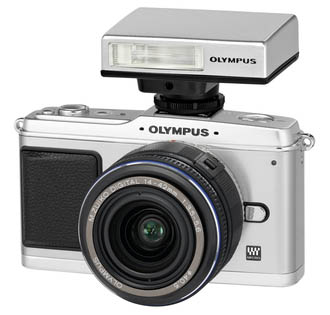
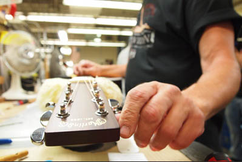
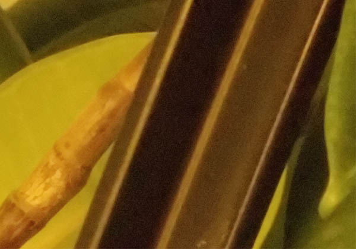
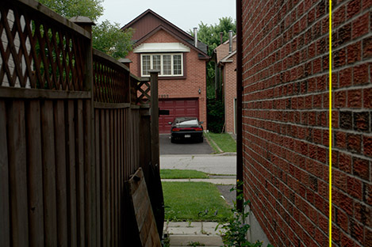

|
Olympus E-P1: An Online ResourceVersion 4.0 (27 Jul 06:38 PM EDT): original material only © 2009 by Dale Cotton, all rights reserved.
Fig. 1: Silver Olympus E-P1 with 17mm lens; White Olympus E-P1 with 14-42 zoom lens This guide aims to provide essential purchase decision information about the E-P1 in as succinct and as usable a format as possible. There is already plenty of information (and even more mis-information) available for those trying to make an informed purchase or pre-order decision. Once it ships an added focus will be tips and tricks for using it. (27 Jul): Shut down due to lack of interest. Content may no longer be up-to-date. (01 Jul): Thanks to BasilCam for finding, to Michaels of Australia for producing, and Buster Cartwright for starring in this wonderful E-P1 video. (23 Jun): Thanks to Jan Chelminski for posting this link on DPReview – a very interesting bit of background: Olympus: E-P1's Pen design unintentional by Leonard Goh. NavigationHelp! Too much, too technical, I just want to decide!(Last update: 06 Jul) The E-P1 crams a dSLR sensor and electronics into the smallest possible package, making it somewhat larger and somewhat heavier than the typical point&shoot compact, but significantly smaller than the smallest dSLR. If you're coming to the E-P1 as an upgrade to a compact camera, you'll pay more but get better image quality, the ability to shoot indoors without flash, a big bright LCD, excellent video capture, the option to use other lenses than the one you bought it with, and the (optional) dSLR-like ability to control all aspects of the camera's operation. If you're coming to the E-P1 as a traveling companion to your dSLR, you may miss the peer-through viewfinder, although the E-P1's LCD is in fact usable in bright daylight and at acute viewing angles. It's auto-focus is similar in speed to that of compacts, slower than most dSLRs (but not as slow as typical dSLR live view AF). The E-P1 is compatible with all existing four thirds mount lenses, plus OM and M mount lenses via adapter; and as a major bonus, all lenses are image-stabilized because Olympus uses sensor-based, not lens-based IS. The E-P1 also has a full dSLR-level control and features set.
Pricing(Last update: 24 Jul. Since E-P1 prices are unlikely to fall below MSRP until the supply chain saturates, the table below should be accurate for some time to come.) (21 Jul): Availability note. There have been many increasingly-concerned posts on online photography forums, such as dpreview.com's, wondering when the white E-P1 will be available in a given sales region. The following is informed speculation, based on previous experience in retail and the few available facts: I strongly suspect the only person who can answer that question is an Olympus production manager somewhere in Tokyo who probably doesn't speak a word of English. We know that pre-orders and orders of the E-P1 went right off the charts. I've read that B&H alone has 5000 orders to fill. But cameras and lenses roll off assembly lines one unit at a time; and production logistics were very likely tailored to only a fraction of that number. Reading between the lines, my guess is that there is only one assembly line; that it did a smallish run of white bodies before the official announcement and before anyone could know how well the somewhat-daring white model would be received, then switched back to production of the safer silver model. A number of that first run of whites went out to the various regional Olympus teams as demos, all or most of the rest apparently went to Olympus Asia. Another run of whites may even have already been done and are sitting somewhere in cargo containers. If my analysis is correct, then all this means that:
*Indications are first shipments are largely dominated by silver bodies and zooms: other kits are rare U.S. prices: Amazon.com, U.K. prices: J&A Cameras, Canadian prices: Henry's, Australian prices: Digital Camera Warehouse, other regions: need source. (21 Jun): Thanks to Rod Souter for the extensive U.K. prices! I originally had Jessops entries, but these were nowhere near so complete as Rod's J&A entries. (21 Jun): Thanks to John McDonough sends this link to the EP-1 + 14-42 kit at Ted's Cameras. This was the only Australian availability in June. (22 Jun): Thanks to Mark Olwick for the more complete U.S. price source. I originally had B&H Photo entries, but these lack the separate lenses and accessory items.
Online resources(Last update: 11 Jul) Documentation
Fig. 2: White Olympus E-P1 cut in half Olympus: Specifications Olympus: Press material Olympus: E-P1 Instruction Manual (PDF) (version 1.0 firmware) Four-thirds.org: Micro four thirds lenses and adapters Four-thirds.org: Standard four thirds lenses and adapters (26 Jun): Thanks to Stu 5 and Daniel VR for sleuthing out the E-P1 manual PDF! Previews, first looks, and user impressions(These are in order of discovery, not in importance or value. I have not included several other previews that provided no new information.)
(22 Jun): Thanks to Roel Hendrickx for the link to the John Foster hands-on.
(26 Jun): Thanks to Jan Chelminski for uncovering this hands-on.
Reviews
Video reviews and samples
(02 Jul): Thanks to DPReview forum member Siminona for uncovering this hands-on.
Raw and JPEG samplesThis is just a smattering of the huge number of E-P1 photo albums already online done with production-level, version 1.00 firmware. Hint: at present the standard commercial raw converters aren't yet supporting the E-P1 .ORF file format. In the interim you can use DCRaw or download the excellent freeware FastStone imaging software (which uses the DCRaw engine under the hood). In FastStone make sure you have the High-quality color interpolation option on the RAW settings tab checked.) Note that you'll be seeing zero noise reduction and zero sharpening, which is not the case with commercial raw converters, even with all sliders set to zero.
All of the above
(22 Jun): Thanks (I think!) to Mark Olwick for the Addict-o-matic link. If this site doesn't get updated after today you'll know what happened to me. ;)
What is it?(Last update: 13 Jul)
Fig. 3: Common digital sensor size to scale (dimensions in millimetres) The E-P1 is one of only three cameras made (along with the Sigma DP1 and DP2) that share its design characteristics:
Tech talk: The E-P1 belongs to a family of micro four thirds (μ43) cameras that also includes the Panasonic G1 and GH1, but micro four thirds does not completely specify the E-P1, since micro four/thirds has nothing to say about what sort of viewfinder is used (other than eliminating the possibility of a mirror-based SLR-style finder). The E-P1 is neither an SLR, nor a TLR, nor a rangefinder, nor a point&shoot compact, nor a view camera. One might call the E-P1 a large-sensor compact (LSC), to introduce a new term for a new category of camera.
Key features
Tech talk: Live view just means that the image on the back LCD shows the changing view the lens sees in real time. This has always been the case with digital point&shoot cameras; but until recently the back LCD on dSLRs only showed an image after capture or in review mode. Tech talk: Image stabilization means that the sensor attempts to compensate for jerky motion as you handhold the camera by means of miniature gyroscopes.
Who is it for?We can only guess, but I see Olympus as having several different target audiences for this camera. Some will buy it for its capabilities; others will be taken in by its sheer good looks and buy it as a retro chic fashion statement. The His and Hers colour schemes and accessory carrying cases are for the later demographic. Fashion and fun
Fig. 4: Olympus promo shot Much of the promo material (Fig. 3) targets this demographic, as do the scene modes, art filters, and the full auto option on the mode dial. The larger sensor's ability to work in low light combined with image stabilization actually make this a better camera for indoor, bar, concert, etc. than any purse-sized point&shoot. Also: the combination of art filter and video is just the sort of thing that could catch on as a significant fad. Mom & Pop travel plus special occasionsOutdoors: The LCDs on point&shoot compact digitals are notoriously difficult to see in bright daylight as any point&shoot, but that doesn't seem to phase the thousands of tourists the swarm over the Grand Canyon's vantage points every day. The E-P1 is probably too much camera for this type of shooting for this demographic, but it certainly can't hurt, and its HyperCrystal LCD technology makes for one of the best displays going. Indoors: Many museums, and historical sites, such as churches, forbid the use of flashes. The E-P1's combination of image stabilization plus usable ISOs as high as 3200 solves this problem. This also makes for better indoor event shots, such as at birthday parties, since it eliminates the artificiality of flash lighting, and red-eye too. SLR substitute for hiking and travelThe image quality is there. The size and weight are great. Can you live without a peer-through finder and with less-than-stellar auto-focus speed? RF substitute for street/candids/snaps, especially low-lightThis may be the ideal purposing for this camera. The E-P1 looks like a tourist p&s, is used like a tourist p&s, and puts strangers at ease like a tourist p&s. As a bonus, the combination of in-camera image stabilization plus reasonable image quality at higher ISOs means candids can also be taken indoors without flash. Hint: Anyone who has ever done street or candids with a digital p&s will have realized that doing so takes inconspicuousness to a whole new level. Any camera you hold to your eye marks you as a serious shooter and immediately makes people self-conscious. Put a black SLR to your eye and you may as well be aiming a howitzer. In contrast, people assume that anyone who is holding a smallish camera out at arm's length to frame is taking amateur vacation/family snapshots and is therefore either focused on family members or some building or other aspect of the scenery, just as they themselves would be doing in the same circumstances. A large subset of the later two demographics have been asking –
Where is the all-black version?(Last update: 28 Jun)
Fig. 5: Hypothetical all-black E-P1 (courtesy of Photoshop) Probable reasons for the current lack of an all-black model:
Update (29 Jun): The real reason? None of the above. Akira Watanabe, product planning manager of Olympus's SLR division, reveals that "we conducted consumer surveys, which show a device in black appears more complicated; and a compact, such as the E-P1, is seen as simpler than a reflex". Hint (28 Jun): Thanks to Michael Yung for finding this source for a pre-cut black leather facing kit.
Lack of finder(Last update: 22 Jun)
Fig. 6: Olympus promo shot: E-P1 back view Let's get this out of the way right off the top: If you need a peer-into finder with critical focus capability for the type of shooting you do, look elsewhere. At least half of the initial reaction to this camera has been protestations and indignation over the lack of a viewfinder. Panasonic already has two micro 4/3 cameras with viewfinders (G1 and GH1); Olympus has one in development. Samsung has the APS-C NX. Leica has the M8.2 rangefinder. These cameras are not noticeably smaller than the smallest dSLRs, such as the Canon Rebel series and the Olympus E-450 and E-620. So it's really very simple: The E-P1 has the same LCD-only viewing capability as a typical point & shoot and can be used in the same way and under the same conditions. The reason there's been so much indignation over the E-P1 is that photographers really want a camera as small as the E-P1 but with complete dSLR functionality and IQ. That's simply not possible with today's technology nor is it likely to be for years to come. Here are some roads not taken with the E-P1:
Instead, Olympus provides a hot-shoe optical finder (VF-4) for the 17mm prime, and will presumably do so for each micro 4/3 prime they release in the future. Again: these lack focus facility and parallax issues but provide a far bigger image and coverage than a tunnel finder. Hint: channeled from my paternal grandfather who used an 8x10 view camera for his entire working career. Stuff a light-weight dark cloth in your pocket and drape it over your head when shooting in bright light. Alternately, substitute a poncho, jacket, or cape. OK: maybe not the best idea for street work. ;) Hint: if using the hot-shoe finder (June 22:) together with a lens with a distance scale, calculate the hyperfocal distance for your favourite f/stop for the focal length of the lens you're using, dial in that distance on the LCD, then leave it there for the duration. Won't help for shallow DOF shots, of course. Correction (21 Jun): Please elaborate: is there a distance scale on the LCD? Cheers, Ukko Heikkinen Hint (22 Jun): Thanks to Swingline, who reports: I use the Hoodman Hoodloupe when I can't see the LCD. It hangs from a rubber string around your neck. You need to shoot with one hand if you don't want to attach it in some makeshift way.
Fig. 7: half-frame glasses solve a frequent LCD complaint Hint: Many photographers over forty have excellent eye sight for distance work but need glasses for close work (presbyopia). Uncorrected, this makes using camera LCDs a chore &ndash you have to either continually swap reading glasses on and off or hold the camera out at full arm's length. Half-frame glasses can be left on and simply overlooked for distance viewing.
Body(Last update: 16 Jul) (06 Jul): It's hard to judge a camera's size from any number of pictures, but no: this is not the magic miniature pocket-cam with dSLR image quality dSLR owners have been dreaming of. The IQ is there, but in size and heft you're better off thinking of it as a somewhat smaller Leica M or as the 35mm compact you or your family happily used in previous decades. It's a camera you can stuff into a little shoulder bag then sling over your shoulders to carry around all day without noticing the weight.
Fig. 8: Olympus promo shot: Silver E-P1 front view As you can see from Fig. 2 above, the E-P1's body is internally some sort of polycarbonate clad with a combination of stainless steel and aluminum plates. All-metal construction has been increasingly rare since the 1980s, so even metal plating puts the E-P1 in an elite stratum of classiness. Dimensions: 120mm by 70.6 mm by 36.4 mm (4.7" x 2.7" x 1.4"), which is somewhat larger than a typical modern compact, and weighs 335 gm + 72 gm for the battery or 407 gm (14 oz) without lens. The kit 14-42 zoom adds 150 gm (5.3 oz) and the kit 17 mm pancake adds 71 gm (2.5 oz).
Fig. 9: Olympus promo shot: White E-P1 top view The silver version has brushed stainless steel wrapping around the body. The stainless steel of the white version is painted with an enamel-like gloss so should clean well. Both versions have aluminum tops and bottoms. Some of the trim is chrome-plated. Notice in Fig. 8 that the mode dial on the left is recessed to prevent the perennial problem with compact cameras of the mode dial's setting being changed by catching in pocket or bag. On the right the now-familiar hand grip is reduced to a raised leatherette rectangle, but the back right edge has a raised lip, so the two combined should provide quite a bit of security for hand-holding. I find the green LED glow around the on/off button something of an avoidable anachronism to the retro styling. The on/off button can still be pressed if the entire area is covered with square of opaque tape.
Fig. 10: Olympus promo shot: Silver E-P1 back view In Fig. 9 A marks the control wheel for the recessed mode dial (also seen in Fig. 8), B marks one assignable-function control wheel, C marks the second assignable-function control wheel, which surrounds the familiar circular 4-way control pad. More information about the controls can be found in Simon Joinson's preview.
Battery and charger(Last update: 16 Jul)
Fig. 11: Olympus BLS-1 battery and BCS-1 charger The E-P1 accepts the slim, 72 gram, Olympus BLS-1 1150 mAh Li-on rechargeable battery. The camera ships with the BLS-1 plus the BCS-1 charger. (Same combination used for the Olympus E-420 and E-620 dSLRs.) The small body size of this camera compared to the typical dSLR put a tight constraint on the size battery that could be used (which in turn undoubtedly put a tight constraint on the power drain of all components used). We frequently see cameras plus batteries rated as 300 or 500 exposures; Olympus rates the E-P1 + BLS-1 for 300 exposures. My own experience and that of several others is that 200 exposures would be a better estimate. If you foresee using the E-P1 for all-day shooting, I'd strongly recommend a spare battery. The BLS-1 is extremely expensive, but so far the camera does work with third-party substitutes. Hint (27 Jun): to conserve battery power Brian Mosley suggests setting the Fn button to Backlit LCD off (see instructions in manual, page 100) and notes that MF likely uses power more sparingly than AF.
The LCD(Last update: 06 Jul) Since the E-P1 lives and dies by its LCD, the quality and usability of the LCD are critical issues. Unlike the LCDs on recent premium dSLRs which sport 900,000 dot 3 inch LCDs, the E-P1's LCD is 3 inches but "only" 230,000 dots. Update (29 Jun): Akira Watanabe, product planning manager of Olympus's SLR division, informs us that the 230K LCD was chosen because it is brighter, and so handles daylight better, than higher res screens. Reading between the lines: this does not necessarily imply that the E-P1's LCD is brighter than all competing screens. Olympus uses HyperCrystal for its excellent viewing angle; the 230K version is apparently the brightest of the HyperCrystal options. On the upside we do know the E-P1's LCD is viewable at extreme angles, which partly offsets the lack of any sort of hinge system. The LCD is HyperCrystal, "meaning the LCD utilizes an additional layer that reflects light from any external light source – both indoors and outdoors - to enhance the brightness of the LCD ... even in direct sunlight". (I can find no information as to which generation of HyperCrystal is involved. The official specs simply say "HyperCrystal" even though other Olympus E system cameras are listed as using HyperCrystal III.) Update (06 Jul): Having now used the E-P1 for many hours in full midday sunlight, I can report that the LCD is in fact viewable in even such hostile lighting. You can see it well enough to frame, to read all setting and menu information, and to manual focus at least fairly well. Colours, however, are somewhat washed out under these conditions; and the contrast between light and dark is exaggerated. Simply bump up the screen brightness (on the set-up menu) before using the camera in bright daylight, then turn it back down when done. Update (16 Jul): another caveat is that the E-P1's live view does not work in extremely dim light. As with any other live view, the image on the LCD becomes increasingly coarse/grainy as light levels drop. Church interiors and bar scenes, however, are fine.
Exposure control(Last update: 11 Jul) Like any modern dSLR, the E-P1 has a rich set of exposure controls. Some highlights include:
Perhaps most importantly: thanks to live view, a very nifty little histogram can be left on-screen. This instantly responds both to the changing light and to any changes you make using exposure compensation, shutter, aperture, etc. A live histogram can be found on some compacts; the difference here is that having two dials with which to directly control exposure settings makes this a very practical feature to use. Hint (11 Jul): Here's the set-up I currently use to configure my E-P1 for general action photography, as in children at play, pets, etc.
Auto focus(Last update: 11 Jul) The E-P1 has the usual set of dSLR AF features. You can select from 11 focus points and the point you've selected is bracketed by a green box on the LCD. Half-pressing the shutter release activates the AF; there is an AE/AF lock button, single frame and continuous frame shooting modes, etc. The main difference between the E-P1's AF and that of dSLRs is that the E-P1 uses contrast detection AF just as point&shoots do, while dSLRs use phase detection AF. Contrast detection AF is in general somewhat slower than phase detection; but Panasonic made a breakthrough in contrast detect speed as premiered in their G1 and GH1 cameras. SpeedImaging Resource's performance testing of the E-P1 with kit lens measures AF focus as taking approximately 1 second. Indications are performance for the 17mm pancake lens and legacy lenses via adapter are very similar. On the other hand, the (extremely expensive) Panasonic micro 4/3 14-140 zoom is dramatically faster when used with the E-P1. This YouTube demonstration by Brian Mosley gives a very idea what the E-P1's focus performance feels like in use. This speed is of course slow by modern SLR standards (SLRs use a different AF technology that depends on the SLR design) and typical of compact cameras. While no particular problem for many types of shooting, when dealing with moving subjects, including sports, children, wildlife, and pets, camera response is very definitely an issue. The trick here is to configure the E-P1 from the default to only re-focusing when required. Here's how: Hint (23 Jun): Thanks to Brian Mosley: How to get Maximum Speed from AF (be sure to set the AEL button to AF-S in the cog menu, as well). See also my own set-up for more information. This set-up frees you to make optimal use of the E-P1's excellent shutter lag (or lack there of). Combine this with a narrow aperture (F/6.3 is ideal) for maximum depth of field to minimize the number of re-focus events required. Auto focus accuracyThe familiar phase detect AF used in dSLRs is fast, but especially in low light or with low contrast subjects it can hunt and eventually fail to lock. After careful comparisons between a very recent Olympus dSLR (the E-620) and the E-P1, swapping the same lenses between them in low light, Brian Mosley finds that in many cases the E-P1 actually out-performs the E-620. His write-up is here. Hint (23 Jun): Thanks also to Brian Mosley: How to set your AF focus target freely.
Manual focus(Last update: 28 Jun) Turning the manual focus ring on an attached 4/3 lens causes the E-P1 to instantly display an inset of a magnified view of the focus point on the LCD. This aids precision focusing. One concern is that, given the E-P1's LCD is "only" 230,000 dots, it will prove too coarse for precision focusing or too difficult in harsh light conditions. Another concern is that too many steps may be needed to manually focus legacy lenses by eye. Until there is more information, those who prefer manual focus may may want to consider that the E-P1 may prove to be optimized more for AF than MF shooting. Update (28 Jun): Thanks to John McDonough for this input on manual focusing. John handled the EP-1 at the PMA in Australia: John's report jives well with Brian Mosley's. I asked him: is the 230K LCD too coarse for accurate MF focus in good light? Brian responded: Definitely not. MF is possible, even without zooming into the 10x live view magnification in most situations - the screen sometimes has a critical focus 'glimmer' when focusing on something like cloth with a fine texture.
Shutter lag(Last update: 26 Jul) As reported in the AF section above, the E-P1's AF time is roughly 1 sec., depending on the lens and particular settings used. If you use AF or MF to pre-focus, the camera's response time from full depressing the shutter release until the exposure is actually made is called its pre-focused shutter lag. Imaging-Resource's review reports the E-P1's pre-focus lag as 0.072 sec. and notes: The E-P1's prefocused lag time of 0.072s is quite fast though, besting some SLRs in its general price range. That's partially because there is no mirror to move out of the way first. It's quite interesting to test your own camera's lag, using the clever on-screen test page at Shooting Digital. My results concur with Imaging-resources in that over multiple trials I'm seeing between 0.05 and 0.1 sec. pre-focused lag with the E-P1 and am unable to get under 0.1 with my dSLR. Also note that the E-P1's lag is essentially identical to the Leica M8 but all are still left in the dust by the 35mm Leica M series. (See this Wikipedia page for details.) (Screen lag: There has been mention on-line that, because the E-P1 uses Live View, there is a necessary processing lag between the time an image hits the sensor and the instant it is shown on the LCD. So if one sees a race horse's nose passing the finish line on the LCD, one is actually seeing it a fraction of a second later than the reality, which does not sound good for action-critical photography. But in fact, using the Shooting Digital test page we can easily see that the screen lag is the same 0.07 sec. interval as its pre-focus lag.)
Lenses(Last update: 24 Jun)
Fig. 12: Olympus promo shot: E-P1 with lenses, adapter and flash CompatibilitiesHint (01 Jul): Thanks to Chris Lulic for finding this elegant lens-to-body matching resource from four-thirds.org. At present the E-P1 is directly compatible with:
And is compatible via adaptors with:
And will undoubtedly have an M mount adapter available in future. Hint (22 Jun): Thanks to Vlatko Juric-Kokic (profile): There are already four or five Leica M -> micro 4/3 adapters: Panasonic, Cosina, CameraQuest, Novoflex... and one more, I think, as I remember seeing one no-name-specified on eBay. All of them will work on E-P1. [Plus there's one PEN -> micro 4/3 adapter, but I don't remember where I saw it.] Note: Due to the micro four thirds' FOV, all M mount and OM mount lenses will crop to 2x their rated focal lengths. So, for example, a 24 mm lens will have the equivalent field of view as a 48 mm. Hint (24 Jun): Thanks to Brian Mosley: E-P1 vs Sigma DP1... close focus distance.
Distortion correctionPanasonic created quite a bit of controversy on the web when people realized that numerical information regarding the kit lens recorded distortion correction numbers for that lens design in each raw file from the camera. Olympus is using the same or similar system with at least its new micro four thirds kit zoom.
Fig. 13: PhotoMe screen shot from lens distortion correction tables contained in the Zuiko ED 50mm F2.0 Macro firmware Fig. 12 shows an example of what certainly appears to be the embedded correction tables from an Imaging-Resource.com raw test file. The TruePic V image processor uses these numbers to eliminate distortions such as chromatic aberrations, barrel or pincushioning, and light fall-off in the JPEGs it produces for each frame. Any raw converter that contains the required logic can do the same thing.
Shutter sound(Last update: 16 Jul) The E-P1 has the same default-open shutter mechanism as the Panasonic G1 and GH1, so it also has a similar muted but definitely not silent shutter activation click. It's much quieter than a traditional film SLR (comparison), noticeably quieter than a digital SLR (comparison), noticeably quieter than a Leica M (comparison), but not silent. Update (29 Jun): many had hoped both the G1 and now the E-P1 would have a silent electronic (or lens-based?) shutter like digital compacts do instead of a mechanical shutter. Akira Watanabe, product planning manager of Olympus's SLR division, explains that sensors need an interval of complete blackness between shots to reset individual pixels to zero.
Video recording(Last update: 29 Jun) Disclaimer: I know very little about video capture; any contributions to this area would be much appreciated! The E-P1 has up to 720p MPEG AVI video capture: 1280 x 720 (up to 7 minutes per file) and 640 x 480 (up to 14 minutes per file) at 30 frames per second. Maximum single file size is 2 GB. This includes stereo sound capture in Wave Format Base, PCM/16bit, 44.1kHz. Many of the camera's still features are enabled for sound, including aperture priority, single AF (but the AF motor is audible!), and even the art filters (which reportedly slow the frame rate). Quite a few sample videos are available on YouTube. Update (29 Jun): why doesn't the sensor-based image stabilization function during video recording? Akira Watanabe, product planning manager of Olympus's SLR division, explains that the problem is that continuous operation of sensor-shift IS rapidly depletes the battery.
Flash photograpny Fig. 14: Olympus promo shot: E-P1 with FL-14 flash unit Disclaimer: I know nothing about flash photography; any contributions to this area would be much appreciated! The E-P1 has no built-in flash; instead an Olympus flash gun or the optional FL-14 hot-shoe flash may be purchased. But note that the FL-14 has no tilt capability. Flash sync speed is 180th/sec.
Image Quality (IQ) - general Fig. 15: Olympus promo: E-P1 sample photo The critical thing about the E-P1 is that it uses a dSLR-sized sensor that is several times larger than the sensors found in compact cameras (see Fig. 3, above). This means it can collect several times as much light per exposure as a compact camera, which is particularly important in low light situations. Next, the E-P1 is a 12 megapixel camera, which is a good general compromise between resolution and low light handling. While the E-P1's sensor is only half the size of a 35mm film frame, its image quality is quite comparable to typical recent 12 mp dSLRs in the resolution, noise, DR, and nuance. Evaluating image quality, however, tends to be a divisive issue. In part this is because there are many elements involved that are purely subjective, such as colour accuracy and contrast; but it's also because some people shoot JPEGs – which depend entirely on the camera's JPEG engine – and some people shoot raw. Raw output is not usable until converted in software on a computer, and each of the many different conversion programs can produce very different results from the same raw image file.
IQ - raw noise(Last update: 16 Jul)
Fig. 16: E-P1 3200 ISO noise (raw, zero NR)  Fig. 17: E-P1 3200 ISO noise (raw, strong NR) While the E-P1's sensor (technically known as 4/3 size) is several times larger than any sensor used in a point&shoot compact camera, it is also somewhat smaller than the (APS-C) sensors used in most other dSLRs. 4/3 sensors in general have a reputation for higher noise levels purely on the theoretical grounds of their necessarily smaller per-pixel light capturing area for a given megapixel count. However, noise has as much to do with the percentage of the pixel area used for light capture, circuitry insulation, and other technical considerations as it does with sheer pixel size. Thanks to the excellent raw image files posted at Imaging-Resource.com, we already know that the E-P1's sensor and image processing circuitry are essentially identical to those used in the Olympus E-30 dSLR. This means that the E-P1's underlying image noise characteristics are also essentially identical to the E-30's. You can see that the E-30 (and therefore the E-P1) holds up very nicely against both Canon and Nikon APS-C dSLRs in this hardware-level comparison from DxO (click on the SNR tab). Hint: (courtesy W. Gordon Goodsman, electronics engineer) To verify raw noise levels for yourself, simply download the Imaging-Resource.com raw files at various ISOs from the E-P1 and other cameras, download the excellent freeware FastStone imaging software, then use it to convert the raw files with zero noise reduction to create a level playing field. In FastStone make sure you have the High-quality color interpolation option on the RAW settings tab checked.)
IQ - JPEG noise(Last update: 16 Jul)
Fig. 18: E-P1 3200 ISO noise (In-camera JPEG) The E-P1 uses the newly developed TruePic V signal processor, which generates the camera's JPEG image output. JPEG shooters are already proclaiming that TruePic V does a significantly better job of juggling noise reduction, detail retention, and colour retention, than any of its predecessors. Hint: Judge for yourself using Imaging-Resource.com's excellent Comparometer.
IQ - resolution(Last update: 26 Jul)  Fig. 19: 3:2 SLR aspect ratio compared to E-P1's 4:3 The E-P1's official image size is 4032x3024 or 12.3 mp. But due to its 4:3 aspect ratio, when considering resolution (and DOF), it's helpful to think of this as being a crop in width of a 14 mp APS-C dSLR frame, as shown in Fig. 21. The E-P1 contains the same sensor but has a weaker anti-aliasing (low pass) filter than the E-30 (and most dSLRs), so it should weigh in with better resolution numbers than the E-30's and at least equal to those of the Panasonic G1, which is very good indeed for 12 mp. If you're familiar with the 14.6 mp Pentax K20D or the 15.1 mp Canon 50D or 500D, you can get a good idea of the E-P1's resolution by thinking of a 4:3 crop of an image from any those cameras but needing less USM to restore acutance.
Fig. 20: 100% detail from 12mp E-P1 (raw + USM)
Fig. 21: 100% detail from 15mp dSLR (raw + USM) Raw res: If you find it easier to judge resolution from in-the-field samples than charts, the raw samples on this page by fourthirdsuser.com look pretty good. You can use FastStone to convert these, as explained above, but bear in mind that FastStone uses the DCRaw engine for conversion and so applies no sharpening whatsoever, unlike most commercial converters.
IQ - dynamic range(Last update: 16 Jul)
Fig. 22: E-P1 9+ stops DR (EVs: A=14.5, B=11, C=5.5, D=4.5) Tech talk: Dynamic range (DR), also called exposure latitude, is the range from darkest to brightest portions of the scene a camera can capture. Given how similar the E-P1's sensor is to the E-30's, it should behave very similarly in this area. As E-30 reviews show, the E-30's DR is quite typical of dSLRs and significantly better than compacts, weighing in at over 8 stops for JPEG capture.
IQ - colour
Fig. 23: E-P1 test shot detail © Brian Mosley Now that production firmware E-P1s are in circulation, sample JPEG and RAW output demonstrate that the E-P1's colour capture is fully as nuanced as any modern dSLR. Colour accuracy is more a matter of JPEG settings or the internal camera profile used by the raw converter than an intrinsic property of the camera. That said, Olympus has something of a reputation for vibrant but tasteful out-of-camera JPEG colour; and the early word is that the E-P1 does not disappoint.
|


{kind=link}
{kind=link}